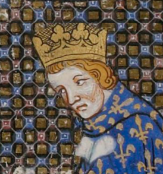

XIV век – столетие несчастий во Франции
В начале XIV века Франция была гегемоном в Европе: именно ко дворцу франузского короля присылали зантных детей, чтобы те могли изучать хорошие манеры, а рыцари со всей Европы прибывали, чтобы получить удовольствие от турниров и праздников. Помимо превосходящей военной силы и высокого уровня образования, французский язык таке занимал значимое место в жизни Европы, поскольку в результате норманнского завоевания Англии и крестовых походов французский язык стал разговорным среди именитых людей Англии, Фландрии и Неаполитанского королевства.
Царствование Филиппа VI Валуа 1328–1350 гг., внука Филиппа III, началось успешно. В течение нескольких месяцев он подавил восстание фламандских суконных городов, завершившееся битвой при Касселе 23 августа 1328 года. Филипп VI сумел восстановить власть над Фландрией, которая являлась предметом интереса для французских монархов долгое время.
Однако первоначальный успех вскоре был сведен на нет. В 1337 году Филипп VI потребовал от Эдуарда III, короля Англии и герцога Аквитанского, возвращения феодального владения герцогства Аквитанского. Эдуард в ответ потребовал для себя корону Франции по праву своего происхождения — по материнской линии он был внуком Филиппа IV Красивого. Этот конфликт стал началом войны, которая в последствии войдет в историю как Столетняя. Необходимо понимать, что, несмотря на претензии Плантагенетов, основные причины этого военного конфликта были не династическими – напряжение между странами назревало на протяжении нескольких лет .
Для Филиппа VI военные неудачи дорого обошлись в деньгах и политической поддержке. В 1340–1341 гг. ему удалось получить «чрезвычайные» доходы за счет налогов на продажи, соль и очаги, несмотря на региональные протесты. В ноябре 1347 г. особенно сильно критиковали французского короля за его внутреннюю экономическую политику, его также обвиняли и в порожениях, что, впрочем, не помещало ему получить денежные средства для поддержки вторжения в Англию. Но эта перспектива, как и сама война, испарилась, когда в конце 1347 года Европу поразила Черная смерть, уничтожившая жизнь, финансовые ресурсы и решимость на несколько лет после этого.
Война против англичан, идущая в основном на территори Франции, имела огромное влияние на все сферы жизни. Страна все еще продолжала жить за счет земли и работы французских крестьян и горожан, которые фактически расплачивались за военные и политические неудачи своего короля, а банды наемников были бичом во времена перемирия после середины XIV в., когда они остались без своего главного способа заработка.
Черная смерть – пандемия как бубонной, так и легочной чумы, – опустошила большую часть Франции в 1348 году и исчезла только в 1350 году. Ничто не помогло остановить болезнь — ни костры, которые разжигали в надежде отчистить воздух, ни коллективные демонстративные покаяния на улицах, которые нередко включали в себя самоистязания, ни гонений на евреев или монахов, которых обвиняли в распространении смертельной болезни.
Чума не встретила больших препятствий на своем пути: как только она смогла попасть в Европу, она начала разрастаться и уносить все больше жизней, опустошая города и вселяя в людей ужас. Учитывая, что эпидемия пришла в Европу, вероятно, через торговые пути, первыми пострадавшими городами были те, которые находились на побережье средиземного моря. Чума приобрела ужасающие масштабы и оставила после разрушительные последствия, и, соответственно, имела значительное влияние на дальнейший исторический процесс: «феномен чумы середины XIV в., получивший устойчивое обозначение «Черной смерти» и характеризующийся нынешними историками-демографами «Великой пандемией», принадлежит к числу тех иррациональных, словно бы периферийных и случайных явлений, которые однажды оказываются эпицентром мировой истории и способны радикально изменить ее ход» .
Народная религия святых, особенно Богородицы, и страх перед демонами более глубоко проникли в коллективное воображение, став крайне очевидными в XV веке. Связанные с усилением беспокойства о грехе и проклятии, эти переживания процветали во времена повторяющихся и непостижимых бедствий, таких как Черная смерть. В целом, рассматривая ситуацию во Франции в XIV веке мы можем заключить, что это столетие действительно стало для страны переломным моментом: бывший гегемон постепенно уступил свое место, постоянные военные конфликты с Англией истощили ресурсы (не только денежные и товарные, но и человеческие), Черная смерть, прошедшая по всей Европе, еще больше усугубила не только демографическое положение, но и моральное состояние общества. При этом, единственная опора, которая была знакома людям, – христианская вера, представленная римско-католической церковью, дала трещину. Видя то, каким образом живут Папы в Авиньене, каким образом церковь зарабатывает деньги, продавая должности и индульгенции, люди разочарорываются в знакомых им церковных инстутах. Подобные изменения в настроениях логично отражаются в искусстве: так, несмотря на то, что danse macabre по своей сути глубоко религиозное произведение, не отделимое от христианской догматики, мы видим в нем четкую критику церкви и духовных лиц, которую мы рассмотрим в следующей главе.